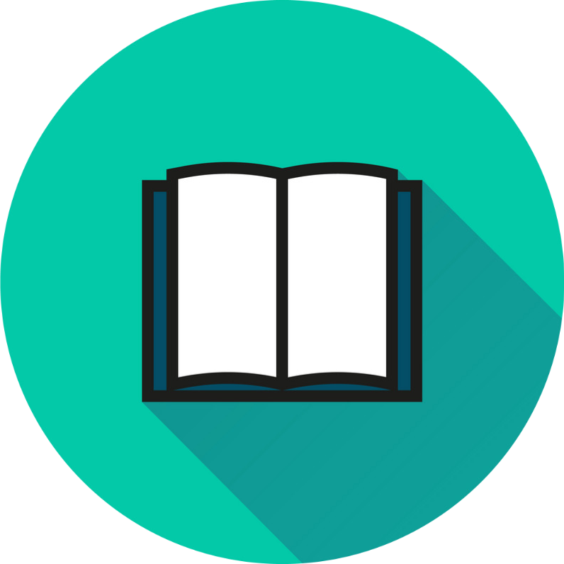

📚 Sashik’s Digital Library
🌍The World of Books: A Portal Into Human Thought and Imagination
“Reading is essential for those who seek to rise above the ordinary.” — Jim Rohn
📗What are These Books
 'Books are more than just bound pages—they're vessels of imagination, reservoirs of knowledge, and mirrors reflecting our thoughts and cultures. At their core, books are a structured way to convey stories, ideas, information, or artistic expression, crafted by authors and meant to be interpreted uniquely by every reader.
'Books are more than just bound pages—they're vessels of imagination, reservoirs of knowledge, and mirrors reflecting our thoughts and cultures. At their core, books are a structured way to convey stories, ideas, information, or artistic expression, crafted by authors and meant to be interpreted uniquely by every reader.
From the ancient scrolls etched in stone to the sleek eBooks of today, books have evolved alongside humanity, yet their essence remains timeless: to connect people through words. Whether you're diving into epic adventures, unraveling mysteries, studying science, or exploring philosophy, a book opens a doorway to another world, time, or perspective.
They preserve history, challenge opinions, and spark creativity, often becoming companions in solitude or catalysts for inspiration. Some books shape entire generations, while others quietly change a single life—and both are equally powerful.
🔹Why We Need These Books
At its heart, a book is not merely an object—it is a dynamic vessel of language, culture, memory, and creativity. Whether manifested in fragile parchment, gilded bindings, or digital code, the book stands as one of humanity’s most transformative inventions: a conduit through which ideas traverse time and space. Books may record scientific discoveries or transport readers into imaginary realms—they democratize knowledge and immortalize voices.
- Analyze More:-
- Encyclopaedia Britannica - History of Books
- National Library of Scotland - The Book Unbound (interactive Exhibit)
🕰️From Stone to Silicon: The Evolution of the Book
Let’s trace the metamorphosis of the written word into its myriad forms:
| Era |
Medium |
Key Development |
Imapact |
| Ancient Civilization |
Clay Tablets |
Writing systems like cuneiform and hieroglyphs |
Early record-keeping and storytelling |
| Classical Antiquity |
Scrolls → Codex(early book format) |
Transition to bound pages |
Improved portability and storage |
| Middle Ages |
Illuminated Manuscripts |
Handwritten books on parchment |
Knowledge preserved in monasteries |
| 15th Century |
Printed Books |
Gutenberg’s movable type printing press |
Mass production and literacy boom |
| Industrial Revolution |
Paperbacks & Periodicals |
Steam presses and serial publishing |
Affordable reading for the middle class |
| 20th Century Print Culture |
Mass Publishing, Libraries |
Offset printing, library systems |
Widespread access and organized cataloging |
| 21st Century |
eBooks & Audiobooks |
Digital formats and cloud storage |
Mobile, accessible, and inclusive reading |
▶️ Watch a Short Video: How Books Changed the World
🎧 Listen to an audiobook sample:Project Gutenberg - Free Classic AudioBooks
📚Typology of Books: Genres, Purposes, and Forms
Books can be classified through multiple lenses—literary, educational, spiritual, technical, recreational—each reflecting a facet of the human experience.
🔸 Genres:
- Fiction: Novels, novellas, short stories, speculative fiction
- Non-fiction: Memoirs, essays, investigative journalism, manuals
- Mixed Forms: Graphic novels, creative nonfiction, poetry anthologies
🔸 Formats:
| Type |
Description |
| Hardcover |
Durable, often collectible, with sewn bindings |
| Paperback |
Lightweight and affordable; popular for mass-market distribution |
| eBook |
Digital file readable on electronic devices; adjustable for accessibility |
| Audiobook |
Narrated versions ideal for multitasking or visually impaired readers |
| Hybrid |
Multimedia-enhanced books (interactive eBooks, AR overlays) |
📸 Visual Example:
Book Types Example
🧠Why We Read: The Cognitive and Emotional Power of Books
Books are not passive items; they activate entire networks in the human brain—empathy, memory, problem-solving, abstract thinking.
- 🧩 Cognitive enhancement: Increases vocabulary, comprehension, and analytical skills
- 💞 Emotional growth: Encourages empathy through narrative immersion
- 🧘 Psychological relief: Reading fiction reduces stress by over 60% (per studies from the University of Sussex)
- 🔬 Neurological resilience: Lifelong reading is linked to delayed onset of cognitive decline
📚 Recommended read
- Proust and the Squid by Maryanne Wolf – a profound look at how reading shapes the brain
🛋️Designing Your Reading Sanctuary
To turn reading into a meditative practice, the environment matters. Here’s how to craft a personalized oasis of calm and curiosity:
🔹 Elements of a Perfect Reading Space
- Seating: Ergonomic chair, hammock, bean bag, or tatami mat—comfort is crucial
- Lighting: Natural sunlight by day, dimmable warm LEDs by night
- Ambience: Scented candles, acoustic panels, soft instrumental music
- Access: A curated shelf, rolling cart, or digital reader with preloaded titles
- Moodboard: Fabric swatches, quote posters, dried flowers or houseplants
🖼️ Reading Nook Inspiration (Click to enlarge):
Reading Space
📖Reading Lists
| Goal |
Suggested Titles |
| Literacy Building |
Animal Farm, The Little Prince, Of Mice and Men |
| Philosophical |
Sophie’s World, Meditations, The Republic |
| Historical |
Guns, Germs, and Steel, A People’s History of the United States |
| Escapism |
Harry Potter series, The Hobbit, The Martian |
You can also explore:
Goodreads - Explore Popular Reading Lists
Open Library - Borrow Free ebooks
🤝 The Communal Life of Book
Reading is deeply personal—but sharing that journey multiplies its meaning.
- 🧑🤝🧑 Join: Book clubs (local or virtual via Reddit or Goodreads)
- 📸 Share: Bookstagram and aesthetic journaling
- 🎙️ Create: Podcast episodes or TikToks reviewing your reads
- 📅 Attend: Literary events, author signings, festivals like Hay or Jaipur Lit Fest
✍️ Try it: Write a micro-review or record a 1-minute video sharing a favorite book and how it changed you.
🔮Conclusion: The Infinite Library Within
Books are not merely narratives—they are codes that reshape thought, empathy engines that illuminate unseen lives, archival flames that burn across generations. As you read, you inherit a part of humanity’s collective soul—and in turn, you leave traces of yourself within the stories you hold dear.
“We read to know that we are not alone.” —William Nicholson
If you’d like this turned into an actual website draft (with HTML or WordPress themes), or need help compiling assets like audio snippets or video carousels, I’d be thrilled to help shape it further. Let’s bring this literary universe to life!
Why We are Special
📚 Discover a New World of Knowledge with Our Online Worldwide Library

In today’s fast-paced digital era, accessing knowledge shouldn't be limited by borders, opening hours, or location. Our online worldwide library is a game-changer for curious minds across the globe. With just a few clicks, users can explore an extensive collection of eBooks, academic journals, audiobooks, magazines, and multimedia resources—anytime, anywhere. Whether you're a student, researcher, professional, or lifelong learner, this platform is built to serve diverse needs and spark continuous growth.
🌍 Global Access, Local Convenience
One of the standout advantages of our library is its truly international reach. Subscribers gain 24/7 access to materials from leading universities, cultural institutions, and publishers around the world. Whether you're researching European philosophy, exploring Asian literature, or brushing up on African history, the resources are just a search away—without the need to travel or wait for inter-library loans.
🔍 Advanced Search & Personalized Experience
Navigating a vast library has never been easier. Our platform features intelligent search tools, curated reading lists, and AI-powered recommendations that adapt to your interests. You can bookmark, annotate, and organize your favorite content, creating a personalized digital bookshelf tailored to your learning journey. This means more time reading and less time searching.
🎧 Multiformat for All Learning Styles
We understand that everyone learns differently. That’s why our library supports multiple formats—from readable text and downloadable PDFs to immersive audiobooks and video lectures. Whether you prefer to read, listen, or watch, you can absorb information your way. This makes the library not only accessible but inclusive for users with different abilities or learning preferences.
🛡️ Secure, Affordable, and Eco-Friendly
Joining our digital library is also a sustainable choice. Say goodbye to printing costs, travel to brick-and-mortar facilities, or shipping physical books. All your resources are cloud-hosted, encrypted for your privacy, and updated in real time. With flexible subscription plans, even the most comprehensive knowledge base is within reach for individuals and institutions alike.
🚀 A Community of Curious Minds
Finally, our platform isn’t just about accessing content—it’s about belonging to a global community of learners. Join discussion forums, attend virtual author talks, and collaborate on research across continents. Your membership connects you to people who are passionate about ideas, education, and discovery. When you join our online worldwide library, you’re not just borrowing books—you’re becoming part of something bigger.
Owner
Sashik Thiwanka
sashikthiwanka1975@gmail.com
© 2025 Value of Books. All rights reserved.